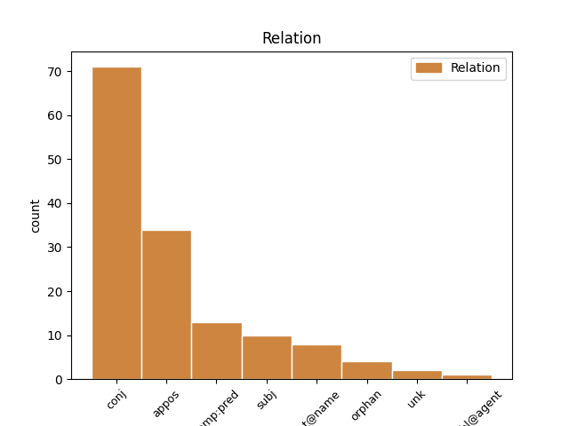
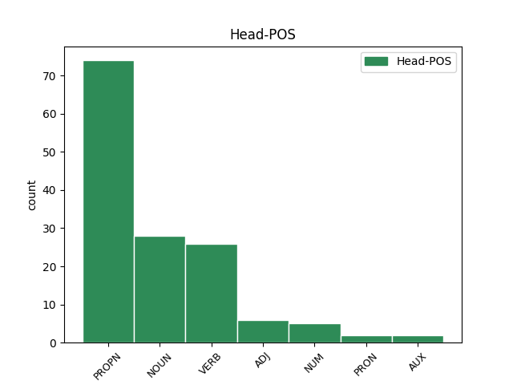
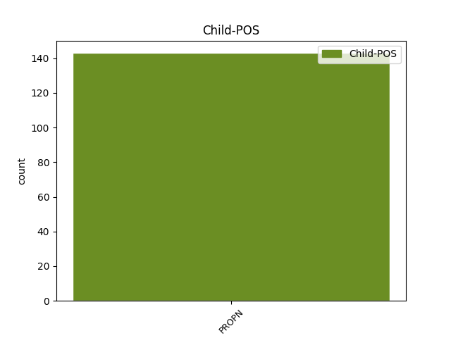

Distribution of features within this leaf



Agreement Rules sorted by frequency.
- When the dependent token is the conjunct(conj) of the head token, and the dependent token is PROPN.
1 что _ _ _ _ 0 _ _ _
2 оубо _ _ _ _ 0 _ _ _
3 к҃рштаеши _ _ _ _ 0 _ _ _
4 аште _ _ _ _ 0 _ _ _
5 тꙑ _ _ _ _ 0 _ _ _
6 нѣси _ _ _ _ 0 _ _ _
7 х҃ъ христ(ос)ъ PROPN Ne Case=Nom|Gender=Masc|Number=Sing 0 _ _ _
8 ни _ _ _ _ 0 _ _ _
9 илиѣ илиꙗ PROPN Ne Case=Nom|Gender=Masc|Number=Sing 7 conj _ ref=JOHN_1.25
10 ни _ _ _ _ 0 _ _ _
11 п҃ркъ _ _ _ _ 0 _ _ _
1 еда _ _ _ _ 0 _ _ _
2 тꙑ _ _ _ _ 0 _ _ _
3 болеи _ _ _ _ 0 _ _ _
4 еси _ _ _ _ 0 _ _ _
5 о҃тца отьць NOUN Nb Case=Gen|Gender=Masc|Number=Sing 0 _ _ _
6 нашего _ _ _ _ 0 _ _ _
7 авраама авраамъ PROPN Ne Case=Gen|Gender=Masc|Number=Sing 5 appos _ ref=JOHN_8.53
8 ꙇже _ _ _ _ 0 _ _ _
9 оумьрѣтъ _ _ _ _ 0 _ _ _
1 Бꙑстъ _ _ _ _ 0 _ _ _
2 же _ _ _ _ 0 _ _ _
3 егда _ _ _ _ 0 _ _ _
4 кръстишѧ _ _ _ _ 0 _ _ _
5 сѧ _ _ _ _ 0 _ _ _
6 вьси _ _ _ _ 0 _ _ _
7 людье _ _ _ _ 0 _ _ _
8 ꙇ҃соу исоусъ PROPN Ne Case=Dat|Gender=Masc|Number=Sing 9 subj _ ref=LUKE_3.21
9 крьштьшю крьстити VERB V- Case=Dat|Gender=Masc|Number=Sing|Strength=Strong|Tense=Past|VerbForm=Part|Voice=Act 0 _ _ _
10 сѧ _ _ _ _ 0 _ _ _
11 и _ _ _ _ 0 _ _ _
12 молѧштю _ _ _ _ 0 _ _ _
13 сѧ _ _ _ _ 0 _ _ _
14 отвръзе _ _ _ _ 0 _ _ _
15 сѧ _ _ _ _ 0 _ _ _
16 небо _ _ _ _ 0 _ _ _
17 ꙇ _ _ _ _ 0 _ _ _
18 съниде _ _ _ _ 0 _ _ _
19 д҃хъ _ _ _ _ 0 _ _ _
20 с҃тꙑи _ _ _ _ 0 _ _ _
21 тѣлесънꙑмъ _ _ _ _ 0 _ _ _
22 зракомъ _ _ _ _ 0 _ _ _
23 ѣко _ _ _ _ 0 _ _ _
24 голѫбь _ _ _ _ 0 _ _ _
25 на _ _ _ _ 0 _ _ _
26 нь _ _ _ _ 0 _ _ _
27 ꙇ _ _ _ _ 0 _ _ _
28 г҃лсъ _ _ _ _ 0 _ _ _
29 съ _ _ _ _ 0 _ _ _
30 небесе _ _ _ _ 0 _ _ _
31 бꙑстъ _ _ _ _ 0 _ _ _
32 г҃лѧ _ _ _ _ 0 _ _ _
1 ч҃лвкъ _ _ _ _ 0 _ _ _
2 нарицаемꙑ нарицати VERB V- Case=Nom|Gender=Masc|Number=Sing|Strength=Weak|Tense=Pres|VerbForm=Part|Voice=Pass 0 _ _ _
3 и҃с исоусъ PROPN Ne Case=Nom|Gender=Masc|Number=Sing 2 comp:pred _ ref=JOHN_9.11
4 брьнье _ _ _ _ 0 _ _ _
5 сътвори _ _ _ _ 0 _ _ _
1 Приде _ _ _ _ 0 _ _ _
2 же _ _ _ _ 0 _ _ _
3 и _ _ _ _ 0 _ _ _
4 симонь симонъ PROPN Ne Case=Nom|Gender=Masc|Number=Sing 0 _ _ _
5 петръ петръ PROPN Ne Case=Nom|Gender=Masc|Number=Sing 4 flat@name _ ref=JOHN_20.6
6 въ _ _ _ _ 0 _ _ _
7 слѣдъ _ _ _ _ 0 _ _ _
8 его _ _ _ _ 0 _ _ _
9 ꙇ _ _ _ _ 0 _ _ _
10 вьниде _ _ _ _ 0 _ _ _
11 прѣжде _ _ _ _ 0 _ _ _
12 въ _ _ _ _ 0 _ _ _
13 гробъ _ _ _ _ 0 _ _ _
14 ꙇ _ _ _ _ 0 _ _ _
15 видѣ _ _ _ _ 0 _ _ _
16 ризꙑ _ _ _ _ 0 _ _ _
17 лежѧштѧ _ _ _ _ 0 _ _ _
18 ꙇ _ _ _ _ 0 _ _ _
19 сѵ҅дарь _ _ _ _ 0 _ _ _
20 иже _ _ _ _ 0 _ _ _
21 бѣ _ _ _ _ 0 _ _ _
22 на _ _ _ _ 0 _ _ _
23 главѣ _ _ _ _ 0 _ _ _
24 его _ _ _ _ 0 _ _ _
25 не _ _ _ _ 0 _ _ _
26 съ _ _ _ _ 0 _ _ _
27 ризами _ _ _ _ 0 _ _ _
28 лежѧшть _ _ _ _ 0 _ _ _
29 нъ _ _ _ _ 0 _ _ _
30 особь _ _ _ _ 0 _ _ _
31 съвитъ _ _ _ _ 0 _ _ _
32 на _ _ _ _ 0 _ _ _
33 единомь _ _ _ _ 0 _ _ _
34 мѣстѣ _ _ _ _ 0 _ _ _
Disagree Examples:
1 аште _ _ _ _ 0 _ _ _
2 хощеши _ _ _ _ 0 _ _ _
3 да _ _ _ _ 0 _ _ _
4 сътворимъ _ _ _ _ 0 _ _ _
5 съде _ _ _ _ 0 _ _ _
6 три _ _ _ _ 0 _ _ _
7 кровꙑ _ _ _ _ 0 _ _ _
8 тебѣ _ _ _ _ 0 _ _ _
9 единъ _ _ _ _ 0 _ _ _
10 и _ _ _ _ 0 _ _ _
11 мосеови моси PROPN Ne Case=Dat|Gender=Masc|Number=Sing 12 orphan _ ref=MATT_17.4
12 единъ ѥдинъ NUM Ma Case=Acc|Gender=Masc|Number=Sing 0 _ _ _
13 и _ _ _ _ 0 _ _ _
14 илии _ _ _ _ 0 _ _ _
15 единъ _ _ _ _ 0 _ _ _
1 аште _ _ _ _ 0 _ _ _
2 хощеши _ _ _ _ 0 _ _ _
3 да _ _ _ _ 0 _ _ _
4 сътворимъ _ _ _ _ 0 _ _ _
5 съде _ _ _ _ 0 _ _ _
6 три _ _ _ _ 0 _ _ _
7 кровꙑ _ _ _ _ 0 _ _ _
8 тебѣ _ _ _ _ 0 _ _ _
9 единъ _ _ _ _ 0 _ _ _
10 и _ _ _ _ 0 _ _ _
11 мосеови _ _ _ _ 0 _ _ _
12 единъ _ _ _ _ 0 _ _ _
13 и _ _ _ _ 0 _ _ _
14 илии илиꙗ PROPN Ne Case=Dat|Gender=Masc|Number=Sing 15 orphan _ ref=MATT_17.4
15 единъ ѥдинъ NUM Ma Case=Acc|Gender=Masc|Number=Sing 0 _ _ _
1 тъгда _ _ _ _ 0 _ _ _
2 събърашѧ _ _ _ _ 0 _ _ _
3 сѧ _ _ _ _ 0 _ _ _
4 архиереи _ _ _ _ 0 _ _ _
5 и _ _ _ _ 0 _ _ _
6 кънижъници _ _ _ _ 0 _ _ _
7 и _ _ _ _ 0 _ _ _
8 старьци _ _ _ _ 0 _ _ _
9 людьстии _ _ _ _ 0 _ _ _
10 на _ _ _ _ 0 _ _ _
11 дворъ _ _ _ _ 0 _ _ _
12 архиереовъ _ _ _ _ 0 _ _ _
13 нарицаемааго нарицати VERB V- Case=Gen|Gender=Masc,Neut|Number=Sing|Strength=Weak|Tense=Pres|VerbForm=Part|Voice=Pass 0 _ _ _
14 каиѣфа каиꙗфа PROPN Ne Case=Nom|Gender=Masc|Number=Sing 13 comp:pred _ ref=MATT_26.3
15 ꙇ _ _ _ _ 0 _ _ _
16 съвѣтъ _ _ _ _ 0 _ _ _
17 сътворишѧ _ _ _ _ 0 _ _ _
18 да _ _ _ _ 0 _ _ _
19 и҃сса _ _ _ _ 0 _ _ _
20 льстиѭ _ _ _ _ 0 _ _ _
21 имѫтъ _ _ _ _ 0 _ _ _
22 и _ _ _ _ 0 _ _ _
23 оубиѭтъ _ _ _ _ 0 _ _ _
1 ꙇмѣаше _ _ _ _ 0 _ _ _
2 же _ _ _ _ 0 _ _ _
3 тъгда _ _ _ _ 0 _ _ _
4 съвѧзьнѣ _ _ _ _ 0 _ _ _
5 нарочита _ _ _ _ 0 _ _ _
6 нарицаемааго нарицати VERB V- Case=Gen|Gender=Masc,Neut|Number=Sing|Strength=Weak|Tense=Pres|VerbForm=Part|Voice=Pass 0 _ _ _
7 варавва вараава PROPN Ne Case=Nom|Gender=Masc|Number=Sing 6 comp:pred _ ref=MATT_27.16
1 кого къто PRON Pi Case=Gen|Number=Sing|PronType=Int 0 _ _ _
2 хощете _ _ _ _ 0 _ _ _
3 отъ _ _ _ _ 0 _ _ _
4 обою _ _ _ _ 0 _ _ _
5 отъпоуштю _ _ _ _ 0 _ _ _
6 вамъ _ _ _ _ 0 _ _ _
7 вараввѫ вараава PROPN Ne Case=Acc|Gender=Masc|Number=Sing 1 appos _ ref=MATT_27.17
8 ли _ _ _ _ 0 _ _ _
9 ꙇ҅ли _ _ _ _ 0 _ _ _
10 и҃са _ _ _ _ 0 _ _ _
11 нарицаемааго _ _ _ _ 0 _ _ _
12 х҃а _ _ _ _ 0 _ _ _